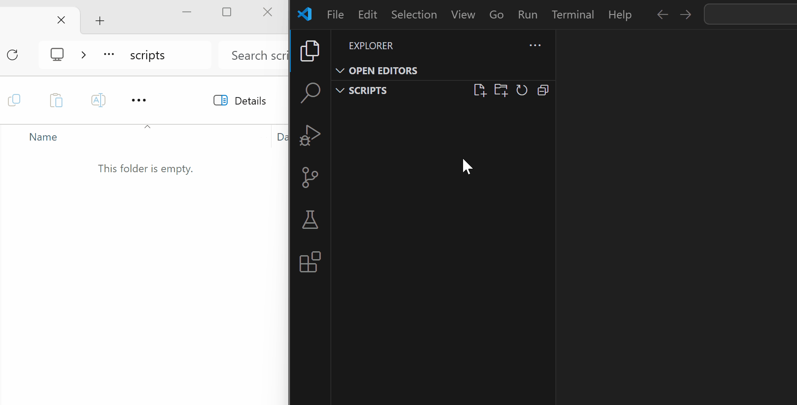

Preparando o VSCode#
Agora que estamos com o VSCode instalado, vamos configurá-lo com o mínimo necessário para iniciar nosso desenvolvimento em Python!
Extensão Python no VSCode#
O VSCode por si só é um editor de texto quase que comum.
Para que ele entenda código Python, é necessário instalarmos a extensão do Python no VSCode.
Nota
Percebam que não estamos instalando o Python, mas sim a extensão Python no VSCode! São coisas distintas! O Python foi instalado nesta seção.
Para instalar a extensão Python, siga os passos abaixo (demonstrados visualmente no gif):
Abra o seu VSCode
(opcional) Feche a janela de boas vindas caso ela venha aberta por padrão
Clique no botão de extensões no menu lateral vertical esquerdo
Procure por Python
Clique no botão azul Install
Curiosidade
Já ouvi espalharem a notícia de que “o Python havia sido comprado pela Microsoft”. A notícia mostrava o print da tela da extensão do Python seguida do nome Microsoft (microsoft.com) ao lado do logo do Python.
Tal notícia não é é verdadeira! O que é fato/verdade: o próprio VSCode e a extensão Python (não o Python em si) foram desenvolvidos pela Microsoft. Python continua sendo open-source e gratuito.
Existem inúmeras outras extensões no VSCode para se trabalhar com Python e até com outras linguagens (SQL também), mas todas as outras são de suporte e auxiliares para o desenvolvimento. Vou preparar um capítulo ou seção a parte só sobre extensões extras e customizações no VSCode.
Abrindo pasta no VSCode#
Sugiro que você crie uma pasta em branco no seu computador para organizar seus estudos. Ela pode ser criada em qualquer outra pasta, desde que você consiga encontrá-la de maneira fácil depois. O nome da pasta também fica à seu critério.
O VSCode consegue trabalhar com manipulação de arquivos e de pastas, caso você esteja trabalhando em algum projeto mais complexo que tenha várias pastas e arquivos.
Neste livro vamos trabalhar dentro desta pasta vazia que você criou. O primeiro passo é abrir esta a pasta no VSCode.
Clique no botão “Explorer” no menu vertical lateral à esquerda no VSCode (ou opcionalmente selecione “File” no menu superior)
Clique em “Open Folder”
Selecione a pasta vazia que você criou (no caso do gif abaixo, eu optei por nomear minha pasta
scripts)
Criando o primeiro arquivo Python#
Com a pasta aberta no VSCode, podemos criar nosso primeiro arquivo Python.
Se liga nos conceitos
Script: são arquivos com comandos de qualquer linguagem de programação.
Os scripts Python tem a extensão .py.
Pense ser um arquivo de texto comum com comandos Python só que ao invés de ter a extensão .txt ele tem a extensão .py.
Para criar o script:
Clique com o botão direito do mouse na área da pasta aberta e selecione “New file”.
Dê um nome para seu script. No meu caso, eu o nomeei
meu_primeiro_script.py. Não se esqueça de adicionar a extensão.pyao final para que o próprio VSCode reconheça seu arquivo como um script Python
Atenção
Não se esqueça de adicionar a extensão .py ao final para que o próprio VSCode reconheça seu arquivo como um script Python.
Reparem que ao criar o script no próprio VSCode, ele é criado automaticamente na pasta. O Explorer do VSCode tem exatamente essa finalidade: trabalhar com pastas e arquivos sem sair do VSCode.
